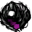
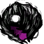

Simple creatures. They exist only to sleep and feed.
”
–Maxwell
The Slurper is a creature found only in Ruins. It attacks by rolling to and biting the target and then jumping up and engulfing the player's head with its mouth.
A Slurper equips itself as an item in the head slot, draining Hunger at a rate of 1.7 per second or 5 every 3 seconds. It makes a constant "slurping" noise as long as it's attached, hence its name, and converts the hunger it feeds off the victim into positive hunger for itself. While attached on a head, the Slurper gives off about the same radius of light as a Miner Hat. A Slurper that is not attached to a character will give off about as much light as a dropped Light Bulb. The source of the light is its eyes, which are made of Light Bulbs.
A Slurper may also attach itself to the head of a Bunnyman or Pig. Since neither Bunnymen nor Pigs have "hunger" implemented in the same way as the player, a Slurper attached to one of these creatures will drain approximately 5 health per 2 seconds instead (which will fill up the Slurper's own hunger meter as per usual). A Bunnyman who loses too much health from a Slurper will flee until it regains health or the Slurper detaches itself. Despite the fact that Splumonkeys may also wear hats, Slurpers do not target them.
Slurpers can easily be removed by attempting to unequip them from the head slot with the mouse. They always drop two Light Bulbs when killed and occasionally also a Slurper Pelt.
Behaviour
A Slurper will initially sleep once spawned, but, once it becomes hungry, it wakes up and wanders, rolling around. At 50% hunger level, it will begin to signal that it is becoming hungrier by raising its "head" and puffing itself up while rumbling. As it begins to starve, it will actively hunt down the player, attempting to latch onto the player's head. If successful, it will begin to drain hunger until it has reached 90% of its capacity. Then, it will drop off and sleep. The player can force the Slurper on by attacking it while it's asleep. The Slurper will then attack and try to latch onto the character's head. A Slurper with an empty stomach can stay attached for 140 seconds before it detaches itself to sleep.
Although a Slurper may attach itself to a Bunnyman or Pig, it will always try to attach itself to the player first, and it will only go for other targets if the player cannot be targeted (e.g. if the player is out of its attack range).
Slurpers are selfish creatures, so it is entirely possible for a Slurper to attempt to attach itself even if one is already feeding on a target's head. This will "drop" the already-attached Slurper and replace it with the new Slurper.
A Slurper who is at 0% hunger will not take damage like players, nor will it change its behaviour in any way. It will continue to hunt down potential targets.
Below is the number of hits it takes with each weapon to kill a Slurper when playing with characters with a default damage modifier.The Weather Pain is not included due to the random nature of its projectile.
Weapon
No. of hits for
48
15
12
8
7
6
5
4-7
5 or 3
4
3
2
1
Trivia
Slurpers were added in the "Hungry For Your Hunger" update and were the reason it was dubbed so.
Using the Teleportato while a Slurper is on the player's head will bring it into the next world.
It is possible to trap a Slurper and keep it in a walled area as a pet.
Bugs
Slurpers can latch onto Woodie's Werebeaver form despite the Werebeaver having no item or equipment slots. With an attached Slurper, the Werebeaver will appear to be missing limbs, usually his head and tail but sometimes his arms.
Slurpers sometimes do not display their sprite if they are in a world when it loads or when frozen by an Ice Staff. They can still be tracked by the light they emit when they are awake however.

 



")
")
")
{kind=link}
{kind=link}
{kind=link}
{kind=link}
{kind=link}
{kind=link}
{kind=link}